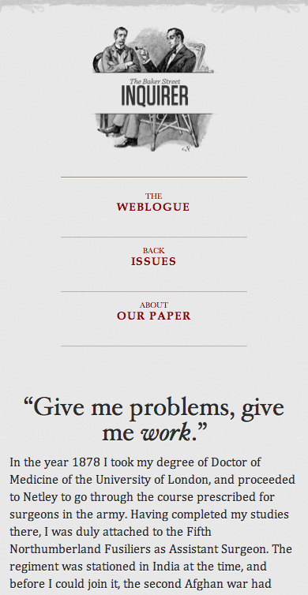

Introduction to
Responsive Design
The Web is Flexible
The control which designers know in the print medium... is simply a function of the limitation of the printed page.
We should embrace the fact that the web doesn't have the same constraints, and design for this flexibility.
~ John Allsopp, A Dao of Web Design
Why Do We Care?
First, there was the desktop
- What size do we target?
- How about percentage-based designs?
Then there was mobile
- Different browsing experience, different app
- Strategies like MVC and SOA redundancy
But is that enough anymore?
The Changing Demographic
Tablets are somewhere in the middle
- Do we treat them as mobile or desktop?
Mobile devices are used in many ways
- A different experience doesn't always make sense
It's time for a paradigm shift
Responsive Design
The ingredients:
- Flexible grid
- Flexible media
- Media queries
Ethan Marcotte in Responsive Web Design (2010)
Responsive Design
 |
 |
Responsive Design
Benefits of Responsive Design
- Save money and time
- Stay relevant to all viewers
- Don't guess at what the user wants
- Provide a consistent experience
The Flexible Grid
Proportional design
- Percentages, not pixels
But what about those pretty Photoshop designs?
- target ÷ context = result
Works for widths, heights, fonts, margins, etc.
Example
A Fixed-Width Design
|
|
Example
Converting to Fluid Width
|
|
Example
What about Fonts?
|
|
Media Queries
Responsive Media
Images have a fixed size
...so what happens when we go fluid?
But that's not how Opera's site looks!
Responsive Media
What did they do?
img {
max-width: 100%;
}Richard Rutter in Images in liquid columns (2003)
Yep, that's it!
What about other media?
img, embed, object, video {
max-width: 100%;
}What About Performance?
Scaling looks bad in IE
#my-image{
background: none;
filter: progid:DXImageTransform.Micrisoft.AlphaImageLoader(
src="/img/example.png", sizingMethod="scale");
}But we're still wasting bytes...
- Media queries
- Anticipatory "polyfills"
- Dynamic image compression
Example
Media Queries
<img src="/img/small.jpg" alt="My Image" class="small">
<img src="/img/medium.jpg" alt="My Image" class="medium">
<img src="/img/large.jpg" alt="My Image" class="large">@media screen and (min-width: 600px) {
.small, .medium { display: none; }
}
@media screen and (min-width: 440px) {
.small, .large { display: none; }
}
@media screen and (max-width: 439px) {
.medium, .large { display: none; }
}Example
Anticipatory "Polyfills"
<figure class="responsive" title="My Image"
data-media440="/img/medium.png" data-media600="/img/large.png"
data-media="/img/small.png">
<noscript>
<img src="/img/large.png" alt="My Image">
</noscript>
</figure><picture alt="My Image">
<source src="/img/small.png">
<source src="/img/medium.png" media="(min-width:440px)">
<source src="/img/large.png" media="(min-width:600px)">
<noscript>
<img src="/img/large.png" alt="My Image">
</noscript>
</picture>Example
Dynamic Image Compression
MWF can do compression from a server farm
<img src="assets/min/img.php?img=http%3A%2F%2Fdomain%2Fimg%2Fexample.png">Adaptive Images uses .htaccess to compress transparently
Numerous other libraries out there as well